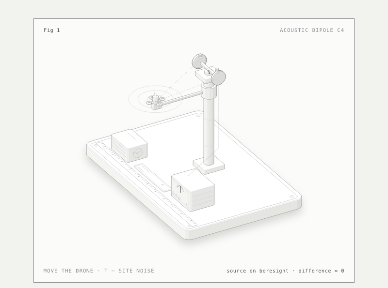
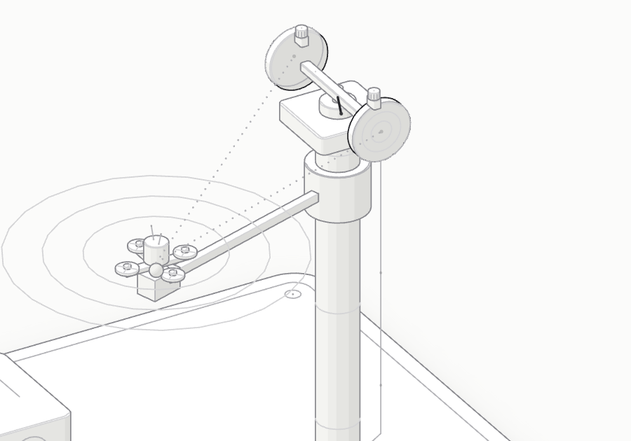
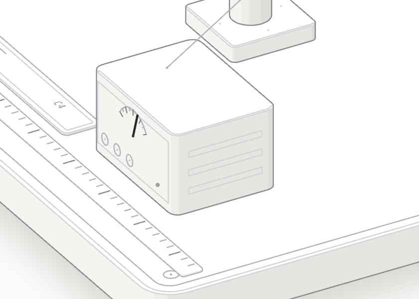
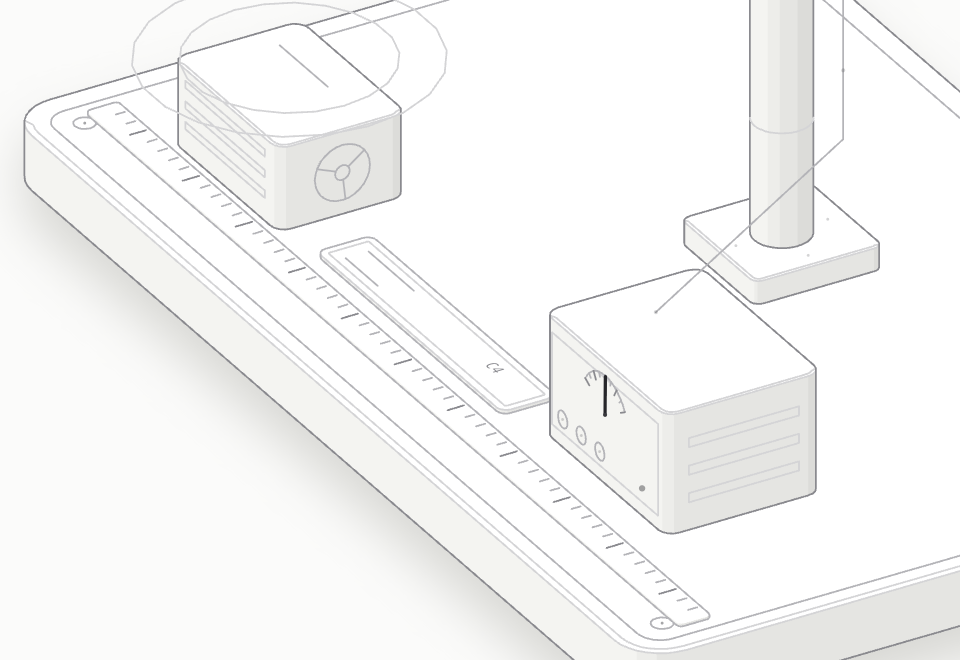

Biomimetics · passive detection
Acoustic dipole C4 — directivity from geometry, not from transmitter power.
00 · Abstract
C4 “Differential Dipole” is a passive acoustic direction finder for detecting UAVs without any emission of its own. A pair of receiving membranes on a short baseline (0.30 m) is mechanically coupled after the model of the hearing of the fly Ormia ochracea: noise common to both channels is subtracted before the decision stage, and the bearing to the source is computed from the time difference of arrival (TDOA).
A vertical offset of the receivers (the owl motif) reserves a channel for elevation. The device only receives and emits nothing; the absence of spectrum licensing requirements is a question for a lawyer, not an engineering fact. Subtraction makes reception more robust to non-directional interference, but interference arriving from the target's direction, and vibration, are not suppressed.
01 · Idea
Acoustic location usually requires either a baseline comparable to the wavelength, or a multi-element array with digital beamforming. A dipole solves the same problem with geometry: two membranes on a short baseline hear the same noise, but at different phases. The mechanical link — like the tympana of the Ormia fly — acts as an analogue subtractor: the common-mode part is cancelled, the differential part remains and carries the direction.
The key consequence: the target's weak signal does not have to be shouted down — it has to be separated out. Common site, ventilation and wind noise reaches both membranes almost equally, so common-mode noise cancellation raises the signal-to-noise ratio before the decision stage, not after it.
“Paired acoustic receivers with a mechanical/electrical link: noise common to the pair is subtracted, leaving a differential signal that carries direction; asymmetric positions of the pair (as in the owl — vertical offset) give a 3D estimate. SNR grows through geometry, not power.” Track B · concepts, C4
02 · Operating principle
Two membranes on a 0.30 m baseline pick up the sound of the propellers — hundreds of hertz to a few kilohertz.
Site noise arrives in common mode; the mechanical link subtracts it before the decision stage — Principle No. 2, Taking out.
The target signal arrives with a delay τ = d·sinθ/c — up to ≈0.82 ms at the edge of the ±70° sector.
The sign and magnitude of the delay give the direction; the vertical offset (the owl motif) is a reserve for elevation.
03 · Demonstrator

Controls: mouse or arrow keys — source azimuth; T or click — common-noise mode; reduced animation — prefers-reduced-motion.
04 · Physics and numbers
| Source angle θ | Arrival difference τ | Phase difference Δφ (500 Hz) |
|---|---|---|
| 30° | 0.44 ms | 79° |
| 42° | 0.59 ms | 105° |
| 60° | 0.76 ms | 136° |
| 70° (sector edge) | 0.82 ms | 148° |
Illustrative values for a 0.30 m baseline; the rig uses the same model. The numbers are case reference points [estimate], not measurement results. The phase difference Δφ is derived from the same delay at f₀ = 500 Hz.
05 · Rig details



The frames are renders of the interactive 3D model, not photographs of a mock-up.
06 · Limits
07 · TRIZ trace
Principle: No. 2, Taking out — separate (technically, subtract) the component common to the channels before the decision stage. This is the only principle assigned to C4 in the track; formally the matrix for the pair 37↔27 recommends No. 27, No. 40, No. 28 and No. 8 — C4 does not come from it, but from the Ormia effect pattern.
Effects: the mechanically coupled tympana of Ormia ochracea (JASA 98(6), 1995; Nature Microsystems & Nanoengineering, s41378-022-00389-9; DTIC ADA543237); the asymmetric ears and facial disc of the owl (owlpages) — vertical offset and passive gain; MEMS microphones and machine learning for passive drone localisation (Acta Acustica, 2026).
Patent check: category N2. The closest analogues are CN121509862A (differential arrays), WO2024147731A1 and NL2028629B1 (biomimetic microphones — hearing devices). No Ormia-dipole schemes for UAVs were found in the databases checked.
08 · Materials
Light and dark themes: dipole-light · dipole. Drone steering, noise mode, readout.
“Self-erecting dome” — the second demonstrator of the same series (not included in this repository).
Report on integrating the Anatomy skill into the agent loop: report (in Russian). Geometry and line checks.
audit passed · 31 solids · line ends 0 (both themes) · DOM without NaN · 390 px without scroll.
09 · Sources